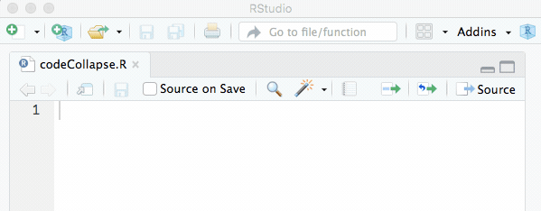

5.2 Coding
Writing code that a computer can understand is actually quite easy - we have even written a simple function in the very first unit of this course. Good code, however, is written for humans to read and only incidentally for machines to execute. It, therefore, is good practice to write code with a reader in your mind (e.g. your supervisor for a thesis, a colleague or your grandparents).
Most of the problems tackled in scientific projects can as well be solved with simple solutions. Advanced logic and aiming for short solutions (e.g. one-liner) may make code hard to read and even harder to understand. The objectives to head for when writing software are therefore clarity and brevity. Speed is important, but there is no necessity to tweak out every little bit of performance (in terms of speed and memory) and this should only be the chosen path if it is really necessary. To ensure readability you should adopt standard code layouts.
While normal analyses and simple programming exercises usually can be pretty well organized with a few R files (.R), bigger projects normally rely on more advanced structures such as R Project files (.Rproj) and Packages. Being an introductory course we focus on simple organization schemes and refer to the appendix (for a very short introduction) and the literature.

Figure 5.2: Exemplary simple Project Skeleton
Apart from simple analyses, most projects require some software development and own functions that are used to analyze a respective dataset. Custom functions should be separated from the pure analysis if they reach a critical mass (which is usually the case), so that it is good advice to separate the code base into two files, like in the figure above. The following chapters discuss the layout of these files before introducing and discussing some additional principles and things to consider when filling the files with actual code.
5.2.1 Standard Program Structure
The standard program structure contains the actual analysis (contrary to own functions) and should contain the following elements:
- Headline: The Name of the Program
- Preamble: A short text explaining the purpose and basic principles of the program, what it does and how it is intended to be used; including a license statement if necessary.
- Author: Name and contact information of the author(s), the (release) date and the version of the software. If multiple versions exist, the version information in the form of a changelog can be handed out.
- Program: The actual program divided into parts or blocks.
- Dependencies: Here external dependencies like libraries or a custom function file should be loaded. If the function file would only contain a few short function definitions it makes obviously no sense to create an own file for them. As long as the readability of the function file is not affected the function definitions could also be included here.
- Constants: Constant values that your program relies on and values that parameterize the methods used below should be user changeable, bundled and included in the second block, directly after loading external dependencies.
- Problem Solving: Here the actual problem solving takes place. Of course, this part can be divided into multiple parts or blocks.
- Output: The output generated by your analysis usually plots, tables or PDFs should be created and exported in the last block of the program.
# Example of Standard Program Structure
# This is an example skeleton of a Standard Program Structure that can be used
# to structure own programs and analyses. It was written purely for educational
# purposes and is part of the lecture notes for the course 'Computational
# Statistics using R'.
# Author: Benjamin Buchwitz (benjamin.buchwitz@ku.de)
# Date: 01.01.1970
# Version Changelog:
# v0.1 - Initial Release
# v0.2 - Major Improvements in Speed and Stability
################################################################################
## PART I: Load Libraries and external Dependencies
################################################################################
# Loading installed packages -------
library(ggplot2)
library(forecast)
# Loading own functions ------------
setwd("~/projectName") # Set working directory to project folder
source("projectName_functions.R")
################################################################################
## PART II: Define Constants
################################################################################
a <- 0.5 # Initial calibration Parameter
n <- 100 # Length of simulated Data
T.eff <- 80 # Value used in the Model
x <- rnorm(n) # Data; standard normally distributed
y <- rnorm(n) + 5 # Data; mean shifted to 5
################################################################################
## PART III: Problem Solving
################################################################################
res <- CalculateSampleCovariance(x, y, verbose=FALSE)
...
################################################################################
## PART IV: Output Results
################################################################################
# Save estimation results ----------
saveRDS(res, "projectName_results.rds")
# Create publication ready plots ---
pdf("plotexample.pdf")
plot(x, y, main="An awesome Plot")
dev.off()5.2.2 Standard Function Structure
The second file contains the functions and should have the following structure.
- Headline: The Name of the Program that the functions belong to
- Preamble: A short text explaining the purpose and basic principles of the functions, what they do and how they are intended to be used; including a license statement if necessary. This can be the same text as in the file described above.
- Function Definitions: Actual definitions of the functions. Each function definition should retain the following structure:
- First Line: Function Constructor and Name of the function
- Preamble: The preamble of a function fulfills similar purposes as the preamble of the file that contains the analysis or function itself. It contains a headline that very briefly describes what the functions do. If necessary an additional text describes the function and its extended purposes or way of implementation. After that all Arguments of the function are introduced and described. Finally, the output, including the corresponding data structure is described.
- Body: The Code that actually solves the Problem.
# Example file with Standard Function Structure
# This is an example skeleton that contains a Standard Function Structure. The
# functions defined here are needed to for the Standard Program Structure above.
# It was written purely for educational purposes and is part of the lecture
# notes for the course 'Computational Statistics using R'.
# Author: Benjamin Buchwitz (benjamin.buchwitz@ku.de)
# Date: 01.01.1970
# Version Changelog:
# v0.1 - Initial Release
# v0.2 - Major Improvements in Speed and Stability
################################################################################
## Function Definitions
################################################################################
#' Computes the sample covariance between two vectors.
#'
#' This function calculates the ordinary sample covariance between two vectors,
#' it is intended to be either used by a user directly and is also used in
#' some other functions, e.g. when calculating the correlation coefficient.
#'
#' @param x One of two vectors whose sample covariance is to be calculated.
#' @param y: The other vector. x and y must have the same length, greater than
#' one, with no missing values.
#' @param verbose Logical. If TRUE, prints sample covariance; if not, output
#' is suppressed. Default is TRUE.
#'
#' @return The sample covariance between x and y.
CalculateSampleCovariance <- function(x, y, verbose = TRUE) {
n <- length(x)
# Error handling
if (n <= 1 || n != length(y)) {
stop("Arguments x and y have different lengths: ",
length(x), " and ", length(y), ".")
}
if (TRUE %in% is.na(x) || TRUE %in% is.na(y)) {
stop(" Arguments x and y must not have missing values.")
}
covariance <- var(x, y)
if (verbose)
cat("Covariance = ", round(covariance, 4), ".\n", sep = "")
return(covariance)
}
...5.2.3 Naming Convention
While the aforementioned Standard Program Structure and the Standard Function Structure regulate what should be presented when developing code it is still unclear how functions, arguments, objects, classes or files should be named. Naming things is considered one of the more tricky parts in computer science. As it may be complicated to change e.g. a function name after it has been heavily used in other functions one needs to adopt a clear and vivid naming scheme. This also ensures that named functions, classes, etc. speak for themselves and is essential to produce readable and self-explaining code.
The following list shows some popular naming conventions that all more or less frequently occur in several programming languages. Of course, not all developers that produce and distribute R software follow the same naming conventions. The function names given in the list below are R functions to illustrate how and where the respective naming scheme can be found within R. The shown list including some additional discussion can be found in the R Journal.
alllowercase: All letters are lower case and no separator is used in names consisting of multiple words as insearchpathsorsrcfilecopy. This naming convention is common in MATLAB. Note that a single lowercase name, such asmean, conforms to all conventions but UpperCamelCase.period.separated: All letters are lower case and multiple words are separated by a period. This naming convention is unique to R and used in many core functions such asas.numericorread.table.underscore_separated: All letters are lower case and multiple words are separated by an underscore as inseq_alongorpackage_version. This naming convention is used for function and variable names in many languages including C++, Perl, and Ruby.lowerCamelCase: Single word names consist of lower case letters and in names consisting of more than one word all, except the first word, are capitalized as incolMeansorsuppressPackageStartupMessage. This naming convention is used, for example, for method names in Java and JavaScript.UpperCamelCase: All words are capitalized both when the name consists of a single word, as inVectorize, or multiple words, as inNextMethod. This naming convention is used for class names in many languages including Java, Python, and JavaScript.
When working in professional software development teams or joining existing projects one usually has to adapt to the defined naming convention. However, when developing alone one should still follow some rules. A good set of rules to follow are these ones:
A Personal Naming Convention
- This naming convention applies to variables, functions, and R files. Files that contain R code are always saved with the extension
.R. - All names are self-explaining English words, usually not abbreviated and at least 3 letters long. I use the singular even if numerous entries are expected. Example: price, duration, strike.
- Names for objects and functions use the
lowerCamelCasenaming scheme with the modifications listed below. - Exceptions to (1) and (2) are widely used single-letter symbols and widely used acronyms. For both, I use only uppercase letters. Examples: X, Y in regression analysis or FFT, GDP.
- Uppercase letters concatenate words. The following rules apply to concatenated names: – Names of variables start with the most general term and end with the most specific (the latter usually denoting a certain method). Examples: optionPriceFFT, optionPriceAnalytic, optionStrike. – Names of functions start with the name of the project, followed by the object of the function, what it does and finally the specific method. Examples: wishartOptionPricingFFT, wishartOptionPricingCosfft, wishartOptionPlotting.
- To avoid confusion, I use the prefix “my”. This may be necessary if one variable is used locally to calculate a variant of a model or if the name conflicts with an existing R command. Example: myLinearModel, myDate.
- Use common Sense and be CONSISTENT! When you reach a point, where the naming convention fails do not use it in this special case and check if it needs to be adapted and improved.
5.2.4 Rules & Best Practices
The following presents some rules and best practices that are widely adopted by programmers and have been proven useful:
Comment your code. Each line of a comment should begin with the comment symbol
#and a single space. Comments should explain the why, not the what. Check twice if the comment is clear and if it is really needed.Rely on commented lines of
######,#====or#----to break up your file into easily readable chunks. While writing your code you can collapse these sections in RStudio so that you do not have to scroll over them every time.

- If you want to implement a feature later or if you assign the responsibility to implement something to a team member choose a consistent style for TODOs throughout your code.
Use White Space and indentation to structure your code, but avoid the tabular key (RStudio helps you by translating every tab into 2 spaces automatically).
Aim for a code width of 80 characters or less, so that your code can be printed if necessary and stays fully visible in text editor windows with moderate width (avoid the necessity to scroll vertically). RStudio provides support for this by displaying a thin grey line in the code editor, that can be enabled via the menu under Tools -> Global Options Dialogue. Choose the Code pane and select the Display tab to checkmark the “show margin column” option.

It is pretty easy to find a case for which we have not discussed a rule yet. Due to the sheer complexity of the topic, we, therefore, rely on some popular examples to follow. Many professional developers have spent and effort to conceptualize complete style-guidelines, some with complete naming schemes and some without one. The following links will point to the most common style guides for R and you are encouraged to choose one (in addition to the things already discussed) when developing software. Note that none of these style guides is an official R standard and that there is (and possibly never will be) no such thing.